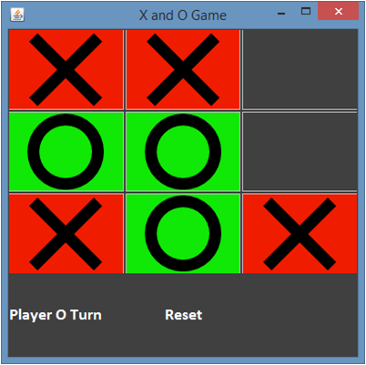
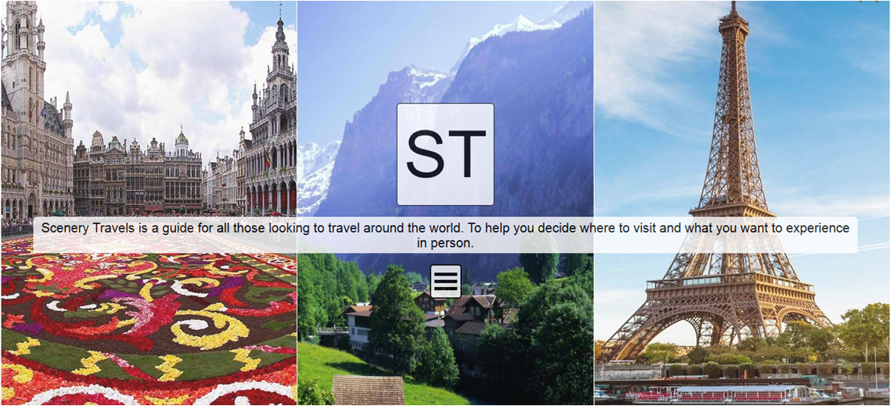
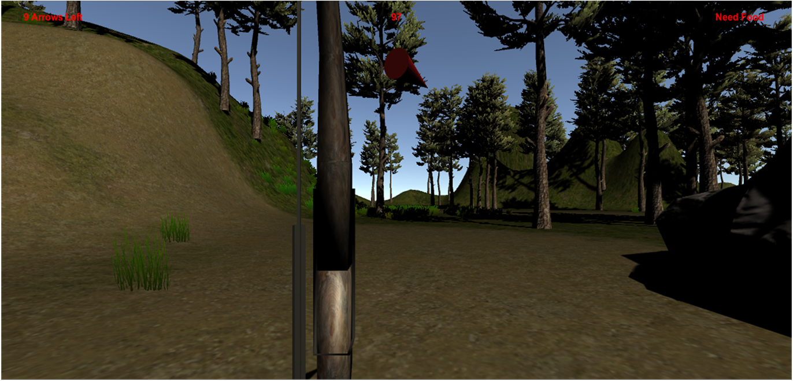
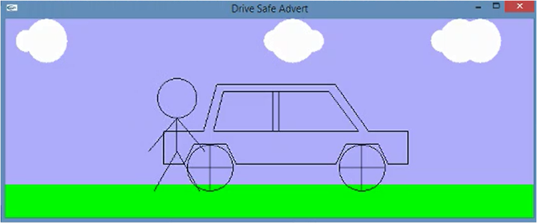

About Me

Education
Projects


X and O Java Game

Scenery Travels web Gallary

Island Escape Unity Game

Safe Driving OpenGL Advert
×

Experience
M&C Saatchi IT Support Assistant (November 2018 - December 2018)
Tesco Extra (November 2017 - January 2018)
Friern Barnet Library (2010 Volunteer work)